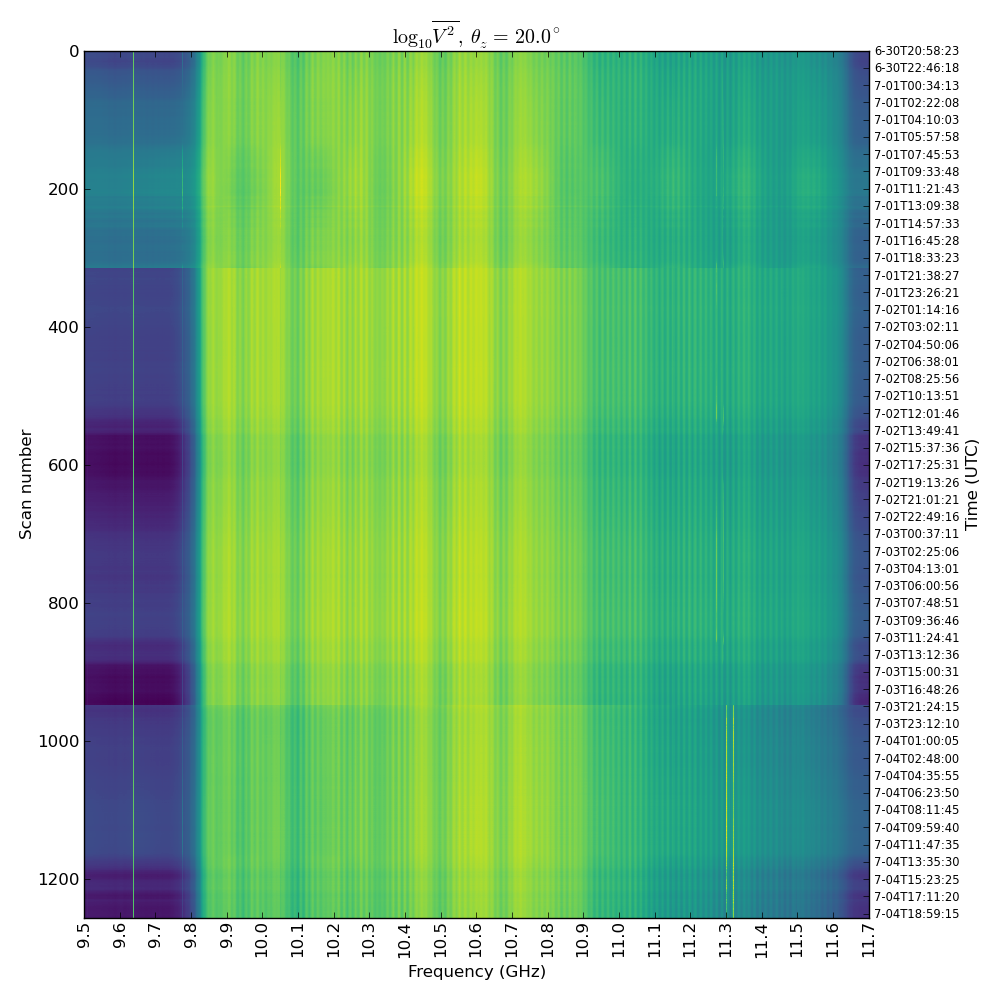
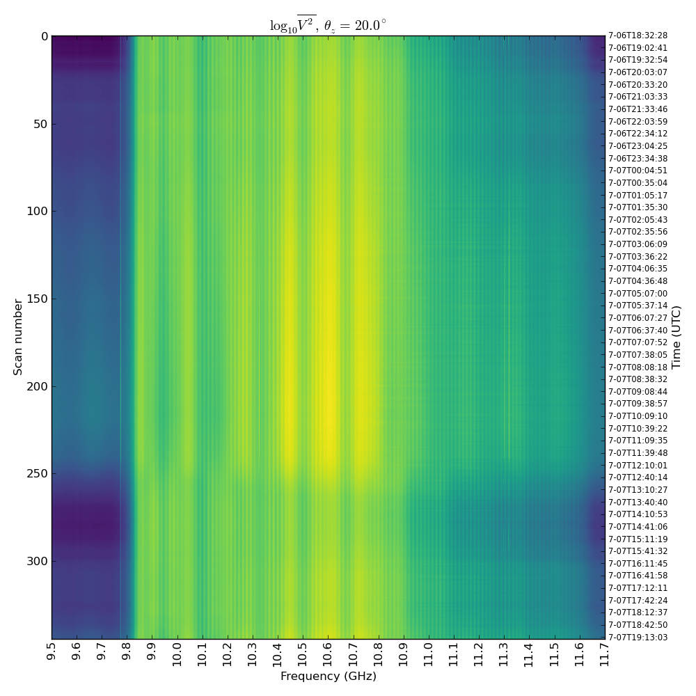
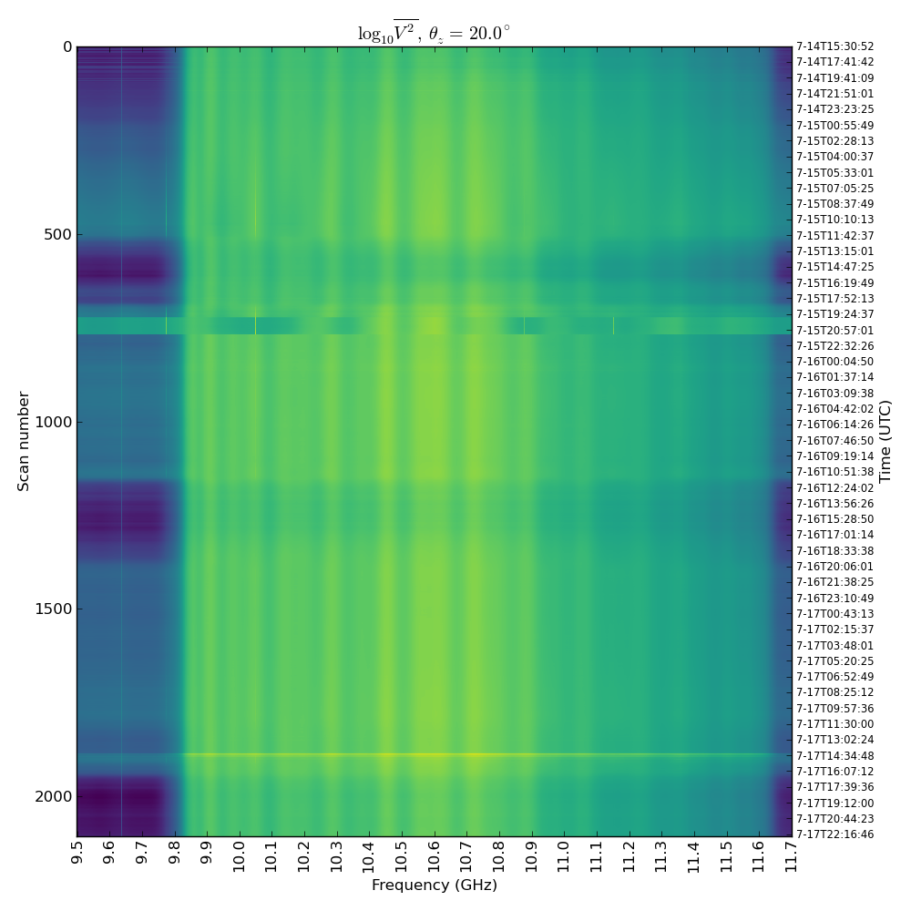
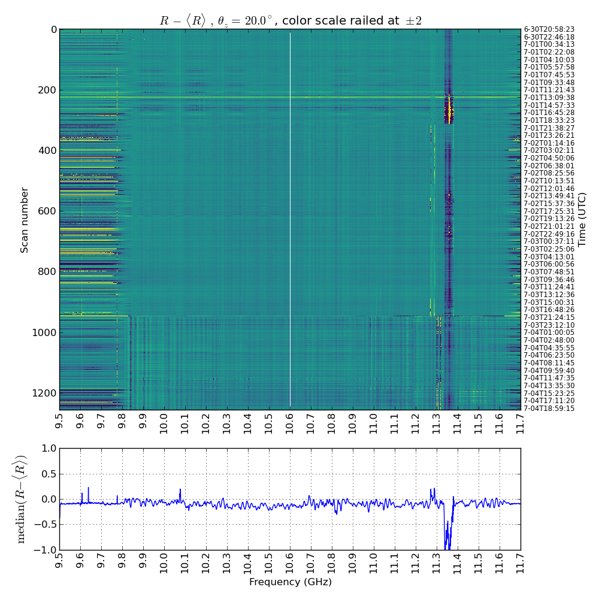
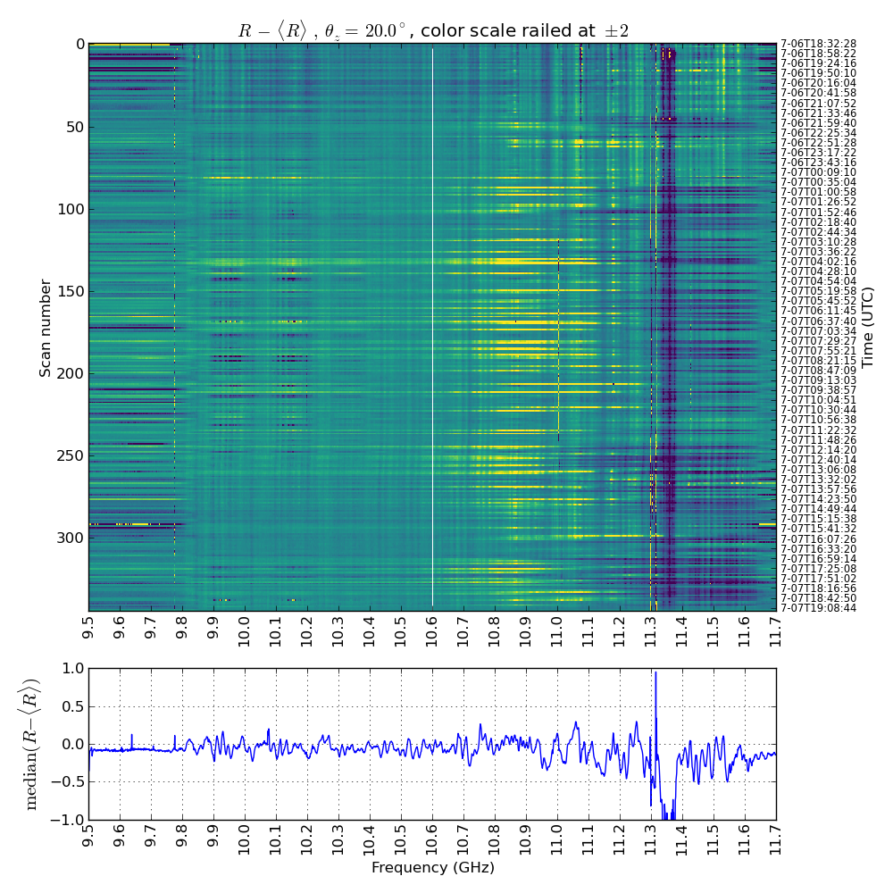
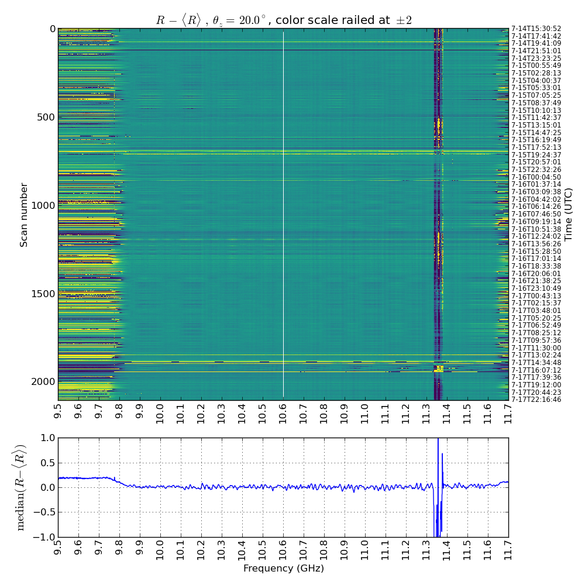

Notable features:
| Fig. 1 - Setup 1 raw spectra (log scale) | Fig. 2 - Setup 2 raw spectra (log scale) | Fig. 3 - Setup 3 raw spectra (log scale) |
|---|---|---|
|  |  |  |
Next let's see the ratio at the nominal $\theta_z=20^\circ$ over time for each setup.
It looks like fig. 1 exhibits a state change at about 7-01T19 but is behaving well before that, and after the first state change. So for the next section we'll use scans #350-900 to be safe. Figure 2 looks very rough throughout but doesn't seem like its undergoing state change, so we'll use the entire range (997 scans). Figure 3 shows a lot of data but to be consistent we'll use scans #800-1800, excluding some data that was contaminated by rain.
The median subplots make it very obvious whether a trial is doing better or worse. Figure 2 is clearly showing some harsh wiggles in the ratio throughout. This is somewhat surprising because I included the short cable based on how it improved the ratio measurement. Could this have looked better before and changed state?
In any case it seems that figure three shows a consistently smoother ratio - I want to see if this has anything to do with the short cable or is just owing to the placement of attenuators after the IF amp.
Figs. 4 - 6:
| Fig. 4 - Setup 1 ratio residuals | Fig. 5 - Setup 2 ratio residuals | Fig. 6 - Setup 3 ratio residuals |
|---|---|---|
|  |  |  |
Finally let's see every trial's median ratio at each za.
|
{kind=link}
{kind=link}
{kind=link}
{kind=link}
{kind=link}
{kind=link}
{kind=link}